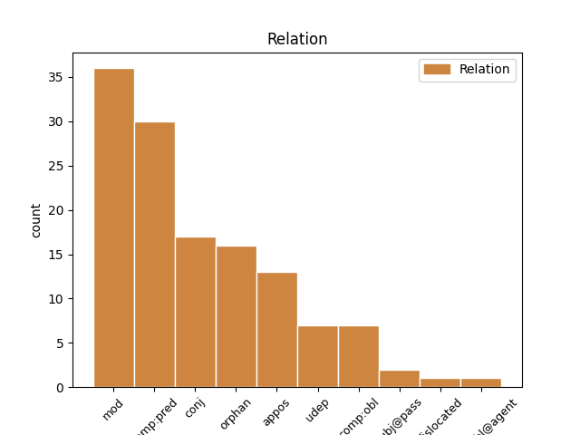
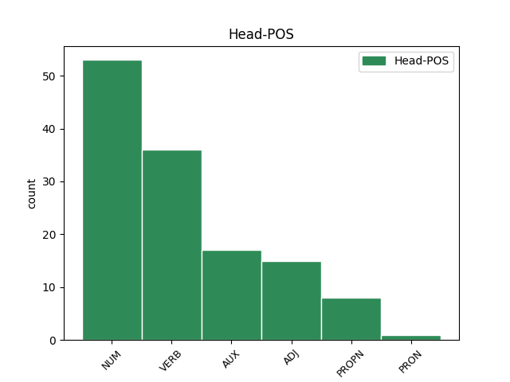
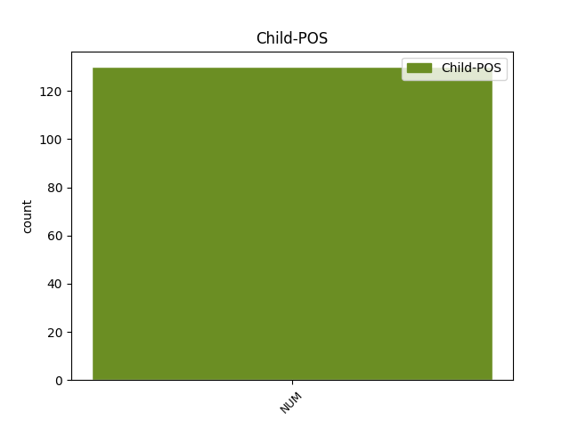

Distribution of features within this leaf



Agreement Rules sorted by frequency.
- When the dependent token is the modifer(mod) of the head token, and the head token is NUM and the dependent token is NUM.
1 гребъше _ _ _ _ 0 _ _ _
2 же _ _ _ _ 0 _ _ _
3 ѣко _ _ _ _ 0 _ _ _
4 дъва дъва NUM Ma Case=Acc|Gender=Masc|Number=Dual 5 mod _ ref=JOHN_6.19
5 десѧтѣ десѧть NUM Ma Case=Acc|Gender=Fem,Masc|Number=Dual 0 _ _ _
6 и _ _ _ _ 0 _ _ _
7 пѧть _ _ _ _ 0 _ _ _
8 стадии _ _ _ _ 0 _ _ _
9 ли _ _ _ _ 0 _ _ _
10 ꙉ _ _ _ _ 0 _ _ _
11 ти _ _ _ _ 0 _ _ _
12 оузьрѣшѧ _ _ _ _ 0 _ _ _
13 и҃са _ _ _ _ 0 _ _ _
14 ходѧща _ _ _ _ 0 _ _ _
15 по _ _ _ _ 0 _ _ _
16 морю _ _ _ _ 0 _ _ _
17 ꙇ _ _ _ _ 0 _ _ _
18 близъ _ _ _ _ 0 _ _ _
19 кораблѣ _ _ _ _ 0 _ _ _
20 бꙑвъша _ _ _ _ 0 _ _ _
21 и _ _ _ _ 0 _ _ _
22 оубоѣшѧ _ _ _ _ 0 _ _ _
23 сѧ _ _ _ _ 0 _ _ _
1 ꙇ _ _ _ _ 0 _ _ _
2 мене _ _ _ _ 0 _ _ _
3 единого _ _ _ _ 0 _ _ _
4 оставите _ _ _ _ 0 _ _ _
5 ꙇ _ _ _ _ 0 _ _ _
6 нѣсмъ не.бꙑти AUX V- Mood=Ind|Number=Sing|Person=1|Tense=Pres|VerbForm=Fin|Voice=Act 0 _ _ _
7 единъ ѥдинъ NUM Ma Case=Nom|Gender=Masc|Number=Sing 6 comp:pred _ ref=JOHN_16.32
8 ѣко _ _ _ _ 0 _ _ _
9 отецъ _ _ _ _ 0 _ _ _
10 съ _ _ _ _ 0 _ _ _
11 мъноѭ _ _ _ _ 0 _ _ _
12 естъ _ _ _ _ 0 _ _ _
1 не _ _ _ _ 0 _ _ _
2 остави оставити VERB V- Aspect=Perf|Mood=Ind|Number=Sing|Person=3|Tense=Past|VerbForm=Fin|Voice=Act 0 _ _ _
3 мене _ _ _ _ 0 _ _ _
4 единого ѥдинъ NUM Ma Case=Gen|Gender=Masc,Neut|Number=Sing 2 comp:pred _ ref=JOHN_8.29
5 о҃тцъ _ _ _ _ 0 _ _ _
6 ѣко _ _ _ _ 0 _ _ _
7 азъ _ _ _ _ 0 _ _ _
8 оугодъна _ _ _ _ 0 _ _ _
9 творѭ _ _ _ _ 0 _ _ _
10 емоу _ _ _ _ 0 _ _ _
11 въсегда _ _ _ _ 0 _ _ _
1 ꙇ _ _ _ _ 0 _ _ _
2 дроугое _ _ _ _ 0 _ _ _
3 паде _ _ _ _ 0 _ _ _
4 на _ _ _ _ 0 _ _ _
5 земи _ _ _ _ 0 _ _ _
6 добрѣ _ _ _ _ 0 _ _ _
7 ꙇ _ _ _ _ 0 _ _ _
8 даѣше _ _ _ _ 0 _ _ _
9 плодъ _ _ _ _ 0 _ _ _
10 въсходѧ _ _ _ _ 0 _ _ _
11 и _ _ _ _ 0 _ _ _
12 растꙑ _ _ _ _ 0 _ _ _
13 ꙇ _ _ _ _ 0 _ _ _
14 приплоди _ _ _ _ 0 _ _ _
15 ово _ _ _ _ 0 _ _ _
16 три _ _ _ _ 0 _ _ _
17 десѧти _ _ _ _ 0 _ _ _
18 ово _ _ _ _ 0 _ _ _
19 м҃ _ _ _ _ 0 _ _ _
20 ово овъ ADJ Pd Case=Nom|Gender=Neut|Number=Sing 0 _ _ _
21 съто съто NUM Ma Case=Acc|Gender=Neut|Number=Sing 20 orphan _ ref=MARK_4.8
1 равьви _ _ _ _ 0 _ _ _
2 добро _ _ _ _ 0 _ _ _
3 естъ _ _ _ _ 0 _ _ _
4 намъ _ _ _ _ 0 _ _ _
5 съде _ _ _ _ 0 _ _ _
6 бꙑти _ _ _ _ 0 _ _ _
7 ꙇ _ _ _ _ 0 _ _ _
8 сътворимъ _ _ _ _ 0 _ _ _
9 три _ _ _ _ 0 _ _ _
10 скиниѩ _ _ _ _ 0 _ _ _
11 тебѣ _ _ _ _ 0 _ _ _
12 единѫ ѥдинъ NUM Ma Case=Acc|Gender=Fem|Number=Sing 0 _ _ _
13 и _ _ _ _ 0 _ _ _
14 мосеові _ _ _ _ 0 _ _ _
15 единѫ _ _ _ _ 0 _ _ _
16 ꙇ _ _ _ _ 0 _ _ _
17 илии _ _ _ _ 0 _ _ _
18 единѫ ѥдинъ NUM Ma Case=Acc|Gender=Fem|Number=Sing 12 orphan _ ref=MARK_9.5
1 Тома ѳома PROPN Ne Case=Nom|Gender=Masc|Number=Sing 0 _ _ _
2 же _ _ _ _ 0 _ _ _
3 единъ ѥдинъ NUM Ma Case=Nom|Gender=Masc|Number=Sing 1 appos _ ref=JOHN_20.24
4 отъ _ _ _ _ 0 _ _ _
5 обою _ _ _ _ 0 _ _ _
6 на _ _ _ _ 0 _ _ _
7 десѧте _ _ _ _ 0 _ _ _
8 нарицаемꙑ _ _ _ _ 0 _ _ _
9 близнецъ _ _ _ _ 0 _ _ _
10 не _ _ _ _ 0 _ _ _
11 бѣ _ _ _ _ 0 _ _ _
12 тоу _ _ _ _ 0 _ _ _
13 съ _ _ _ _ 0 _ _ _
14 ними _ _ _ _ 0 _ _ _
15 егда _ _ _ _ 0 _ _ _
16 приде _ _ _ _ 0 _ _ _
17 и҃с _ _ _ _ 0 _ _ _
1 г҃лѭ _ _ _ _ 0 _ _ _
2 вамъ _ _ _ _ 0 _ _ _
3 ѣко _ _ _ _ 0 _ _ _
4 тако _ _ _ _ 0 _ _ _
5 радостъ _ _ _ _ 0 _ _ _
6 бѫдетъ _ _ _ _ 0 _ _ _
7 на _ _ _ _ 0 _ _ _
8 н҃бсе _ _ _ _ 0 _ _ _
9 о _ _ _ _ 0 _ _ _
10 единомъ _ _ _ _ 0 _ _ _
11 грѣшъницѣ _ _ _ _ 0 _ _ _
12 каѭшти _ _ _ _ 0 _ _ _
13 сѧ _ _ _ _ 0 _ _ _
14 неже _ _ _ _ 0 _ _ _
15 о _ _ _ _ 0 _ _ _
16 девѧти девѧть NUM Ma Case=Loc|Gender=Fem|Number=Sing 0 _ _ _
17 десѧтъ _ _ _ _ 0 _ _ _
18 и _ _ _ _ 0 _ _ _
19 девѧти девѧть NUM Ma Case=Loc|Gender=Fem|Number=Sing 16 conj _ ref=LUKE_15.7
20 праведъницѣхъ _ _ _ _ 0 _ _ _
21 иже _ _ _ _ 0 _ _ _
22 не _ _ _ _ 0 _ _ _
23 трѣбоуѭтъ _ _ _ _ 0 _ _ _
24 покааниѣ _ _ _ _ 0 _ _ _
1 ꙇ _ _ _ _ 0 _ _ _
2 се _ _ _ _ 0 _ _ _
3 дъва _ _ _ _ 0 _ _ _
4 отъ _ _ _ _ 0 _ _ _
5 нихъ _ _ _ _ 0 _ _ _
6 бѣсте _ _ _ _ 0 _ _ _
7 идѫшта _ _ _ _ 0 _ _ _
8 въ _ _ _ _ 0 _ _ _
9 тъжде _ _ _ _ 0 _ _ _
10 день _ _ _ _ 0 _ _ _
11 вь _ _ _ _ 0 _ _ _
12 весь _ _ _ _ 0 _ _ _
13 отъстоѩштѫ отъстоꙗти VERB V- Case=Acc|Gender=Fem|Number=Sing|Strength=Strong|Tense=Pres|VerbForm=Part|Voice=Act 0 _ _ _
14 стадии _ _ _ _ 0 _ _ _
15 шесть шесть NUM Ma Case=Acc|Gender=Fem|Number=Sing 13 comp:obl _ ref=LUKE_24.13
16 десѧтъ _ _ _ _ 0 _ _ _
17 отъ _ _ _ _ 0 _ _ _
18 ꙇ҃ма _ _ _ _ 0 _ _ _
19 еиже _ _ _ _ 0 _ _ _
20 имѧ _ _ _ _ 0 _ _ _
21 емаоусъ _ _ _ _ 0 _ _ _
22 ꙇ _ _ _ _ 0 _ _ _
23 та _ _ _ _ 0 _ _ _
24 бесѣдоваашете _ _ _ _ 0 _ _ _
25 къ _ _ _ _ 0 _ _ _
26 себѣ _ _ _ _ 0 _ _ _
27 о _ _ _ _ 0 _ _ _
28 вьсѣхъ _ _ _ _ 0 _ _ _
29 сихъ _ _ _ _ 0 _ _ _
30 приключьшиихъ _ _ _ _ 0 _ _ _
31 сѧ _ _ _ _ 0 _ _ _
1 ꙇ _ _ _ _ 0 _ _ _
2 се _ _ _ _ 0 _ _ _
3 жена _ _ _ _ 0 _ _ _
4 бѣаше _ _ _ _ 0 _ _ _
5 д҃хъ _ _ _ _ 0 _ _ _
6 имѫшти имѣти VERB V- Case=Nom|Gender=Fem|Number=Sing|Strength=Strong|Tense=Pres|VerbForm=Part|Voice=Act 0 _ _ _
7 недѫжень _ _ _ _ 0 _ _ _
8 ѕ҃ осмь NUM Ma Case=Acc|Gender=Fem|Number=Sing 6 udep _ ref=LUKE_13.11
9 ꙇ҃ _ _ _ _ 0 _ _ _
10 на _ _ _ _ 0 _ _ _
11 десѧте _ _ _ _ 0 _ _ _
12 лѣтъ _ _ _ _ 0 _ _ _
13 и _ _ _ _ 0 _ _ _
14 бѣ _ _ _ _ 0 _ _ _
15 слѫка _ _ _ _ 0 _ _ _
16 ꙇ _ _ _ _ 0 _ _ _
17 не _ _ _ _ 0 _ _ _
18 могѫшти _ _ _ _ 0 _ _ _
19 сѧ _ _ _ _ 0 _ _ _
20 въсклонити _ _ _ _ 0 _ _ _
21 отънѫдь _ _ _ _ 0 _ _ _
1 ꙇ _ _ _ _ 0 _ _ _
2 ни _ _ _ _ 0 _ _ _
3 едина ѥдинъ NUM Ma Case=Nom|Gender=Fem|Number=Sing 6 subj@pass _ ref=LUKE_12.6
4 отъ _ _ _ _ 0 _ _ _
5 нихъ _ _ _ _ 0 _ _ _
6 нѣстъ не.бꙑти AUX V- Mood=Ind|Number=Sing|Person=3|Tense=Pres|VerbForm=Fin|Voice=Act 0 _ _ _
7 забьвена _ _ _ _ 0 _ _ _
8 прѣдъ _ _ _ _ 0 _ _ _
9 б҃мъ _ _ _ _ 0 _ _ _
1 Въ _ _ _ _ 0 _ _ _
2 оутрѣи _ _ _ _ 0 _ _ _
3 дьнь _ _ _ _ 0 _ _ _
4 народъ _ _ _ _ 0 _ _ _
5 иже _ _ _ _ 0 _ _ _
6 стоѣаше _ _ _ _ 0 _ _ _
7 об _ _ _ _ 0 _ _ _
8 онъ _ _ _ _ 0 _ _ _
9 полъ _ _ _ _ 0 _ _ _
10 морѣ _ _ _ _ 0 _ _ _
11 видѣвъ _ _ _ _ 0 _ _ _
12 ѣко _ _ _ _ 0 _ _ _
13 кораблѣ _ _ _ _ 0 _ _ _
14 иного _ _ _ _ 0 _ _ _
15 не _ _ _ _ 0 _ _ _
16 бѣ _ _ _ _ 0 _ _ _
17 тоу _ _ _ _ 0 _ _ _
18 тъкъмо _ _ _ _ 0 _ _ _
19 единъ ѥдинъ NUM Ma Case=Nom|Gender=Masc|Number=Sing 20 mod _ ref=JOHN_6.22
20 тъ тъ ADJ Pd Case=Nom|Gender=Masc|Number=Sing 0 _ _ _
21 въ _ _ _ _ 0 _ _ _
22 ньже _ _ _ _ 0 _ _ _
23 вьнидѫ _ _ _ _ 0 _ _ _
24 оученици _ _ _ _ 0 _ _ _
25 его _ _ _ _ 0 _ _ _
26 ꙇ _ _ _ _ 0 _ _ _
27 ѣко _ _ _ _ 0 _ _ _
28 не _ _ _ _ 0 _ _ _
29 вьниде _ _ _ _ 0 _ _ _
30 съ _ _ _ _ 0 _ _ _
31 оученикꙑ _ _ _ _ 0 _ _ _
32 своими _ _ _ _ 0 _ _ _
33 и҃с _ _ _ _ 0 _ _ _
34 въ _ _ _ _ 0 _ _ _
35 корабь _ _ _ _ 0 _ _ _
36 нъ _ _ _ _ 0 _ _ _
37 едини _ _ _ _ 0 _ _ _
38 оученици _ _ _ _ 0 _ _ _
39 его _ _ _ _ 0 _ _ _
40 идѫ _ _ _ _ 0 _ _ _
1 дроуѕии _ _ _ _ 0 _ _ _
2 же _ _ _ _ 0 _ _ _
3 иеремиѭ҄ иѥремиꙗ PROPN Ne Case=Acc|Gender=Masc|Number=Sing 0 _ _ _
4 ли _ _ _ _ 0 _ _ _
5 единого ѥдинъ NUM Ma Case=Gen|Gender=Masc|Number=Sing 3 conj _ ref=MATT_16.14
6 отъ _ _ _ _ 0 _ _ _
7 п҃ркъ _ _ _ _ 0 _ _ _
1 аще _ _ _ _ 0 _ _ _
2 же _ _ _ _ 0 _ _ _
3 съгрѣшитъ _ _ _ _ 0 _ _ _
4 къ _ _ _ _ 0 _ _ _
5 тебѣ _ _ _ _ 0 _ _ _
6 братръ _ _ _ _ 0 _ _ _
7 твои _ _ _ _ 0 _ _ _
8 ꙇди _ _ _ _ 0 _ _ _
9 обличи _ _ _ _ 0 _ _ _
10 и _ _ _ _ 0 _ _ _
11 междю _ _ _ _ 0 _ _ _
12 собоѭ _ _ _ _ 0 _ _ _
13 и _ _ _ _ 0 _ _ _
14 тѣмь тъ ADJ Pd Case=Ins|Gender=Masc,Neut|Number=Sing 0 _ _ _
15 единѣмь ѥдинъ NUM Ma Case=Ins|Gender=Masc,Neut|Number=Sing 14 appos _ ref=MATT_18.15
1 ꙇшьдъ _ _ _ _ 0 _ _ _
2 же _ _ _ _ 0 _ _ _
3 рабо _ _ _ _ 0 _ _ _
4 тъ _ _ _ _ 0 _ _ _
5 обрѣте _ _ _ _ 0 _ _ _
6 единого _ _ _ _ 0 _ _ _
7 отъ _ _ _ _ 0 _ _ _
8 клеврѣтъ _ _ _ _ 0 _ _ _
9 своихъ _ _ _ _ 0 _ _ _
10 ꙇже _ _ _ _ 0 _ _ _
11 бѣ _ _ _ _ 0 _ _ _
12 длъженъ длъжьнъ ADJ A- Case=Nom|Degree=Pos|Gender=Masc|Number=Sing|Strength=Strong 0 _ _ _
13 емоу _ _ _ _ 0 _ _ _
14 сътомъ съто NUM Ma Case=Ins|Gender=Neut|Number=Sing 12 comp:obl _ ref=MATT_18.28
15 пѣнѧѕъ _ _ _ _ 0 _ _ _
16 ꙇ _ _ _ _ 0 _ _ _
17 имъ _ _ _ _ 0 _ _ _
18 давлѣше _ _ _ _ 0 _ _ _
19 и _ _ _ _ 0 _ _ _
20 г҃лѧ _ _ _ _ 0 _ _ _
1 тꙑ _ _ _ _ 0 _ _ _
2 ли _ _ _ _ 0 _ _ _
3 единъ ѥдинъ NUM Ma Case=Nom|Gender=Masc|Number=Sing 5 dislocated _ ref=LUKE_24.18
4 пришълецъ _ _ _ _ 0 _ _ _
5 еси бꙑти AUX V- Mood=Ind|Number=Sing|Person=2|Tense=Pres|VerbForm=Fin|Voice=Act 0 _ _ _
6 въ _ _ _ _ 0 _ _ _
7 ꙇ҃мъ _ _ _ _ 0 _ _ _
8 ꙇ _ _ _ _ 0 _ _ _
9 не _ _ _ _ 0 _ _ _
10 чю _ _ _ _ 0 _ _ _
11 бꙑвъшиихъ _ _ _ _ 0 _ _ _
12 въ _ _ _ _ 0 _ _ _
13 дьни _ _ _ _ 0 _ _ _
14 сиѩ _ _ _ _ 0 _ _ _
1 бѣ _ _ _ _ 0 _ _ _
2 же _ _ _ _ 0 _ _ _
3 аньдрѣа _ _ _ _ 0 _ _ _
4 братръ _ _ _ _ 0 _ _ _
5 симона _ _ _ _ 0 _ _ _
6 петра _ _ _ _ 0 _ _ _
7 единъ _ _ _ _ 0 _ _ _
8 отъ _ _ _ _ 0 _ _ _
9 обоѭ оба NUM Ma Case=Gen|Number=Dual 10 mod _ ref=JOHN_1.41
10 слꙑшавъшюю҅ слꙑшати VERB V- Case=Gen|Gender=Masc|Number=Dual|Strength=Weak|Tense=Past|VerbForm=Part|Voice=Act 0 _ _ _
11 отъ _ _ _ _ 0 _ _ _
12 иоана _ _ _ _ 0 _ _ _
13 ꙇ _ _ _ _ 0 _ _ _
14 по _ _ _ _ 0 _ _ _
15 немь _ _ _ _ 0 _ _ _
16 шьдъшюю _ _ _ _ 0 _ _ _
Disagree Examples:
1 Сиѩ сь ADJ Pd Case=Acc|Gender=Masc|Number=Plur 0 _ _ _
2 оба оба NUM Ma Case=Acc|Gender=Masc|Number=Dual 1 mod _ ref=MATT_10.5
3 на _ _ _ _ 0 _ _ _
4 десѧте _ _ _ _ 0 _ _ _
5 посъла _ _ _ _ 0 _ _ _
6 и҃съ _ _ _ _ 0 _ _ _
7 заповѣдавъ _ _ _ _ 0 _ _ _
8 имъ _ _ _ _ 0 _ _ _
9 г҃лѧ _ _ _ _ 0 _ _ _
1 дроугаа _ _ _ _ 0 _ _ _
2 же _ _ _ _ 0 _ _ _
3 падѫ _ _ _ _ 0 _ _ _
4 на _ _ _ _ 0 _ _ _
5 земи _ _ _ _ 0 _ _ _
6 добрѣ _ _ _ _ 0 _ _ _
7 ꙇ _ _ _ _ 0 _ _ _
8 даѣхѫ _ _ _ _ 0 _ _ _
9 плодъ _ _ _ _ 0 _ _ _
10 ово _ _ _ _ 0 _ _ _
11 съто _ _ _ _ 0 _ _ _
12 ово _ _ _ _ 0 _ _ _
13 шесть шесть NUM Ma Case=Acc|Gender=Fem|Number=Sing 0 _ _ _
14 десѧтъ десѧть NUM Ma Case=Gen|Gender=Fem,Masc|Number=Plur 13 mod _ ref=MATT_13.8
15 ово _ _ _ _ 0 _ _ _
16 три _ _ _ _ 0 _ _ _
17 десѧти _ _ _ _ 0 _ _ _
1 дроугаа _ _ _ _ 0 _ _ _
2 же _ _ _ _ 0 _ _ _
3 падѫ _ _ _ _ 0 _ _ _
4 на _ _ _ _ 0 _ _ _
5 земи _ _ _ _ 0 _ _ _
6 добрѣ _ _ _ _ 0 _ _ _
7 ꙇ _ _ _ _ 0 _ _ _
8 даѣхѫ _ _ _ _ 0 _ _ _
9 плодъ _ _ _ _ 0 _ _ _
10 ово _ _ _ _ 0 _ _ _
11 съто _ _ _ _ 0 _ _ _
12 ово _ _ _ _ 0 _ _ _
13 шесть _ _ _ _ 0 _ _ _
14 десѧтъ _ _ _ _ 0 _ _ _
15 ово овъ ADJ Pd Case=Nom|Gender=Neut|Number=Sing 0 _ _ _
16 три _ _ _ _ 0 _ _ _
17 десѧти десѧть NUM Ma Case=Acc|Gender=Fem,Masc|Number=Plur 15 orphan _ ref=MATT_13.8
1 а _ _ _ _ 0 _ _ _
2 сѣаное _ _ _ _ 0 _ _ _
3 на _ _ _ _ 0 _ _ _
4 добрѣ _ _ _ _ 0 _ _ _
5 земи _ _ _ _ 0 _ _ _
6 сь _ _ _ _ 0 _ _ _
7 естъ _ _ _ _ 0 _ _ _
8 слꙑшѧи _ _ _ _ 0 _ _ _
9 слово _ _ _ _ 0 _ _ _
10 и _ _ _ _ 0 _ _ _
11 разоумѣваѩ _ _ _ _ 0 _ _ _
12 е _ _ _ _ 0 _ _ _
13 ꙇ _ _ _ _ 0 _ _ _
14 приноситъ _ _ _ _ 0 _ _ _
15 плодъ _ _ _ _ 0 _ _ _
16 ѣко _ _ _ _ 0 _ _ _
17 подобаатъ _ _ _ _ 0 _ _ _
18 и _ _ _ _ 0 _ _ _
19 творитъ _ _ _ _ 0 _ _ _
20 ово _ _ _ _ 0 _ _ _
21 р҃ _ _ _ _ 0 _ _ _
22 ово _ _ _ _ 0 _ _ _
23 м҃ _ _ _ _ 0 _ _ _
24 ово овъ ADJ Pd Case=Nom|Gender=Neut|Number=Sing 0 _ _ _
25 ꙉ҃ триѥ.десѧте NUM Ma Case=Acc|Gender=Fem,Masc|Number=Plur 24 orphan _ ref=MATT_13.23
1 ѣдѫщихъ _ _ _ _ 0 _ _ _
2 же _ _ _ _ 0 _ _ _
3 бѣ _ _ _ _ 0 _ _ _
4 мѫжъ _ _ _ _ 0 _ _ _
5 ѣко _ _ _ _ 0 _ _ _
6 пѧть пѧть NUM Ma Case=Nom|Gender=Fem|Number=Sing 0 _ _ _
7 тꙑсѫщь тꙑсѧщи NUM Ma Case=Gen|Gender=Fem|Number=Plur 6 mod _ ref=MATT_14.21
8 развѣ _ _ _ _ 0 _ _ _
9 женъ _ _ _ _ 0 _ _ _
10 и _ _ _ _ 0 _ _ _
11 дѣтеи _ _ _ _ 0 _ _ _